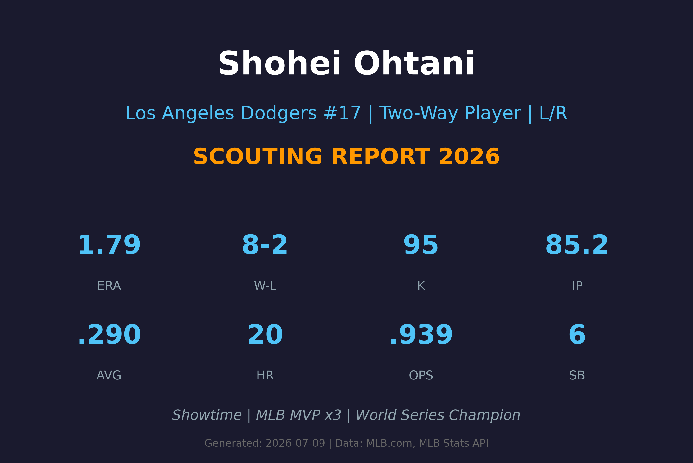
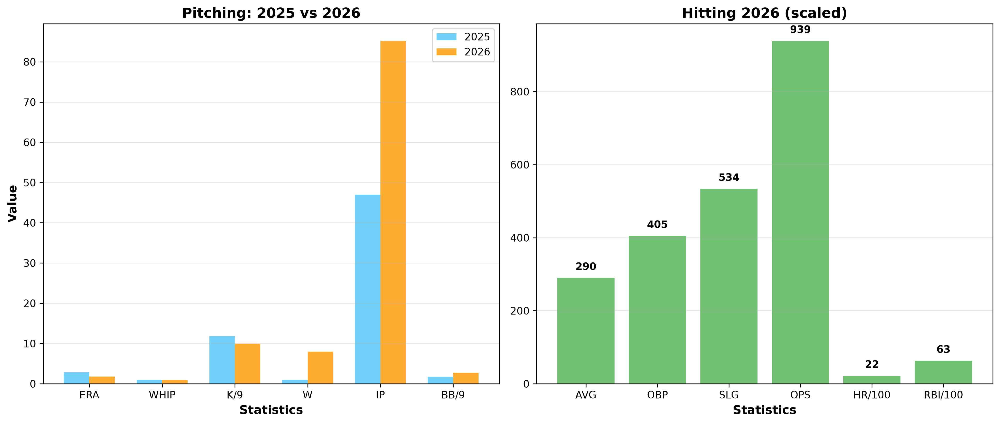
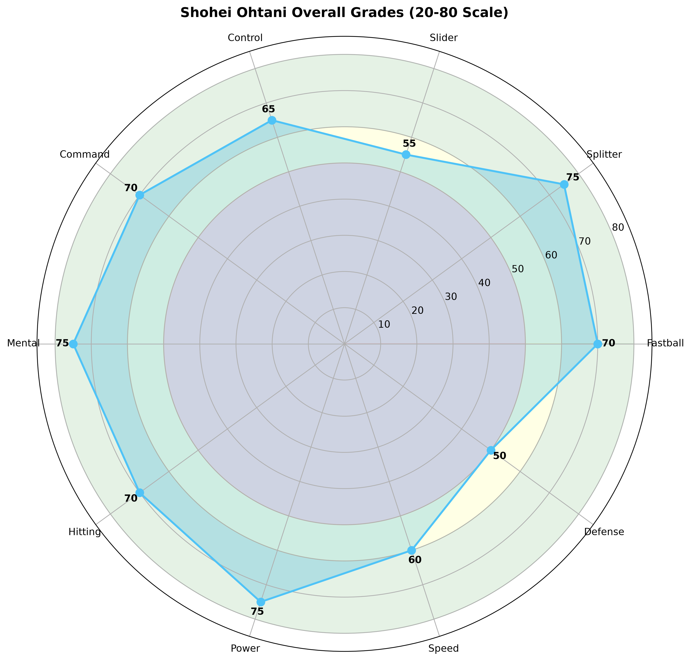

Los Angeles Dodgers #17 | Two-Way Player | L/R | Showtime

大谷翔平是MLB历史上最伟大的双向球员，百年一遇的棒球天才。他同时拥有赛扬奖级别的投球能力和MVP级别的打击能力，这在现代棒球中绝无仅有。
职业生涯累计300+全垒打、170+盗垒、700+打点，同时投球生涯47胜22败、2.83 ERA。他是继贝比·鲁斯之后，唯一能在同一赛季投出10+胜场和击出30+全垒打的球员。
2024年成为史上首位50/50俱乐部成员（54支全垒打+59次盗垒），2025年再获国联MVP，2024和2025年带领道奇队夺得世界大赛冠军。
2018年3月29日完成大联盟首秀，同年以指定打击身份击出首轰，展现罕见双向天赋。
46轰、100打点、26盗垒，同时投出9胜、3.18 ERA，成为贝比·鲁斯之后首位单季双位數胜投与30轰的球员。
44轰、95打点、20盗垒；投球10胜、3.14 ERA。开季连续7场先发拿下4胜，展现赛扬级投球与 MVP 级打击。
史上首位 50轰+50盗垒（54轰、59盗垒）球员，并带领道奇夺得世界大赛冠军，季后赛多次关键长打。
再次率领道奇夺冠，个人蝉联国联MVP，成为道奇王朝核心与 MLB 最具商业价值的球星。
单场双响炮并贡献盗垒，帮助道奇在主场拉开系列赛优势，被誉为近代世界大赛最伟大个人表现之一。

| 赛季 | GS | W-L | ERA | IP | K | BB | WHIP | K/9 |
|---|---|---|---|---|---|---|---|---|
| 2025 | 14 | 1-1 | 2.87 | 47.0 | 62 | 9 | 1.04 | 11.87 |
| 2026 | 14 | 8-2 | 1.79 | 85.2 | 95 | 26 | 0.95 | 9.98 |
| 赛季 | G | AVG | HR | RBI | SB | OPS |
|---|---|---|---|---|---|---|
| 2025 | 147 | .310 | 54 | 130 | 59 | 1.036 |
| 2026 | 89 | .290 | 20 | 56 | 6 | .939 |
96-100 mph
大谷的招牌速球，最高可达100mph+。上旋强烈，产生上升效应，打者常常挥空或击出高飞球。速球是他压制对手的基础武器。
A 评分
86-89 mph大谷最致命的出局球。下坠幅度极大，速度落差明显，与速球形成完美搭配。根据Statcast数据，对手面对指叉球打击率极低。
A+ 评分
82-85 mph
横向位移明显的滑球，对左打者极具威胁。大谷的滑球品质逐年提升，在2022-2023年曾成为他的主要出局球之一。
B+ 评分
78-81 mph
偶尔使用的变化球，用于打乱打者节奏。大谷的曲球旋转效率良好，但使用频率较低，主要用于配球变化。
B 评分

MLB史上最强双向球员，名人堂级别超级巨星
A+ 级 / 历史级超级巨星
大谷翔平正处于职业生涯巅峰期。2026年投球数据显著提升（ERA从2.87降至1.79），同时保持MVP级别的打击表现。作为32岁的球员，他的身体状态和技术水平均处于最佳时期。
2026-2027：保持双向巅峰，挑战MVP+赛扬双奖，道奇队核心领袖
2028-2029：逐步减少投球频率（保护手臂），重点转向打击DH角色，仍保持顶级表现
2030+：转型全职强打者，继续冲击历史纪录，名人堂笃定入选
大谷翔平出生于日本岩手县奥州市。父亲大谷彻是当地三菱重工所属业余棒球队员，母亲大谷加代子则是竞技羽毛球运动员。大谷就读于岩手县花卷东高等学校，2012年入选日本U-18国家队，2013年日本职棒选秀中被北海道日本火腿斗士队第一指名。
在火腿队时期，大谷展现了二刀流的惊人天赋。2016年球季，他投出10胜同时击出22支全垒打，成为日本职棒史上首位单季10胜+20轰的球员。
大谷翔平于2023年与日本前职业篮球运动员田中真美子结婚。2025年4月，两人迎来了女儿的诞生。田中真美子曾效力于日本富士通红浪女篮（2019-2023），是身高180cm的前锋。
大谷以低调谦逊著称，尽管拥有全球最高薪资（10年7亿美元），但他始终保持日本传统运动员的谦逊作风。他在采访中常说"只想帮助球队赢球"，这种态度深受队友和球迷喜爱。